01Contexte
Module « Cartographie et localisation appliquée à la robotique mobile » : en trois jours, construire les outils d'un robot qui se repère avec un lidar. Le robot est une base Mecanum pilotée par un ESP32, avec un lidar LD06 (environ 450 mesures par tour). Le terrain est une salle de classe d'environ 13 m sur 8 m, scannée depuis sept positions.

02Mon rôle
Projet individuel : toute la chaîne logicielle en Python (numpy, pandas, matplotlib, pyserial), versionnée sous Git (23 commits) et testée avec pytest (25 tests).
03Mesurer
Le lidar envoie ses mesures sur le port série. Je les lis tour par tour, je filtre les points aberrants, puis je passe des coordonnées polaires (angle, distance) aux coordonnées cartésiennes.
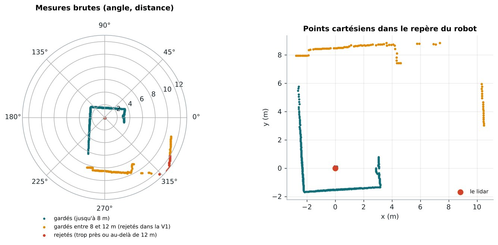
Chaque scan est vu depuis son propre robot. Pour les assembler, il faut connaître la position (la « pose ») de chacun : je les ai d'abord réglées à la main avec un outil à curseurs.
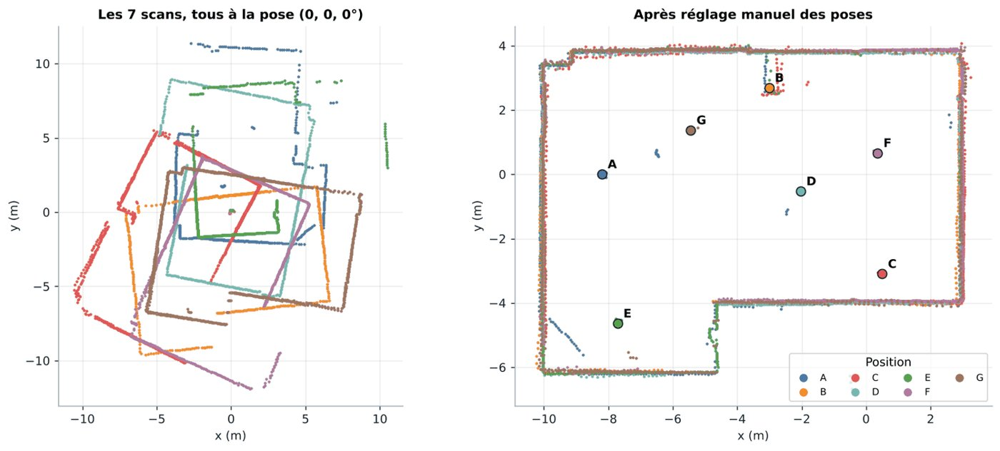
04Cartographier
- Grid map : carte en cases de 2 cm, mise à jour par lancer de rayons (Bresenham) : cases traversées libres, case d'impact occupée.
- Carte vectorielle : extraction de segments (découpe récursive, moindres carrés, fusion). La salle est décrite par 19 segments.
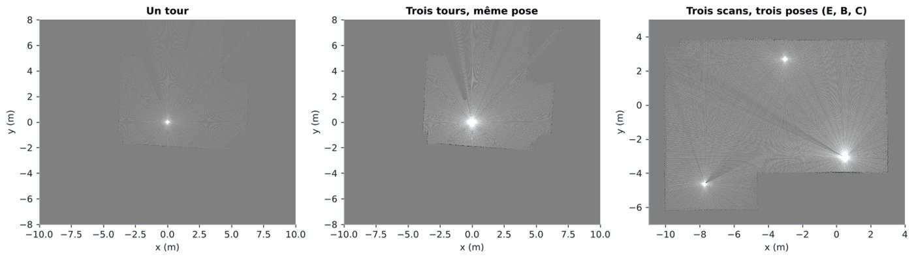
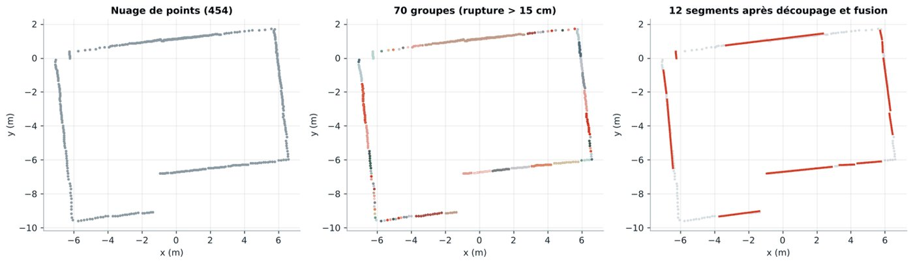
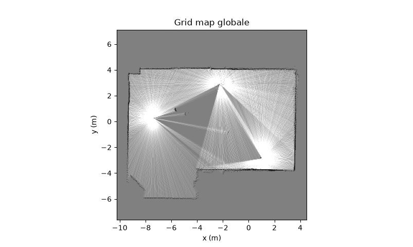
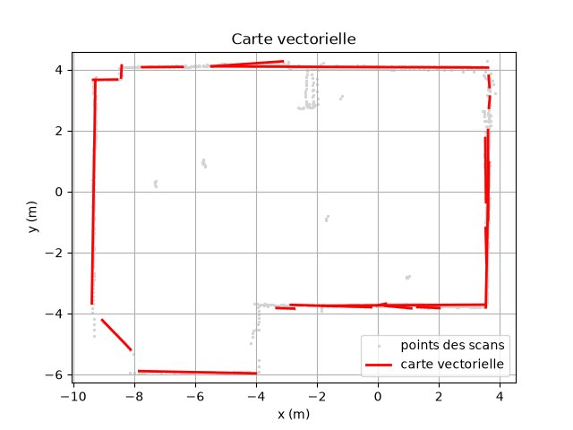
05Se localiser
Le robot doit retrouver sa position (x, y, θ) en comparant un scan à la carte (scan matching). J'ai codé une recherche exhaustive, puis une recherche multi-résolution plus rapide, et je les ai évaluées sur trois références : grid map, carte vectorielle et scan précédent.
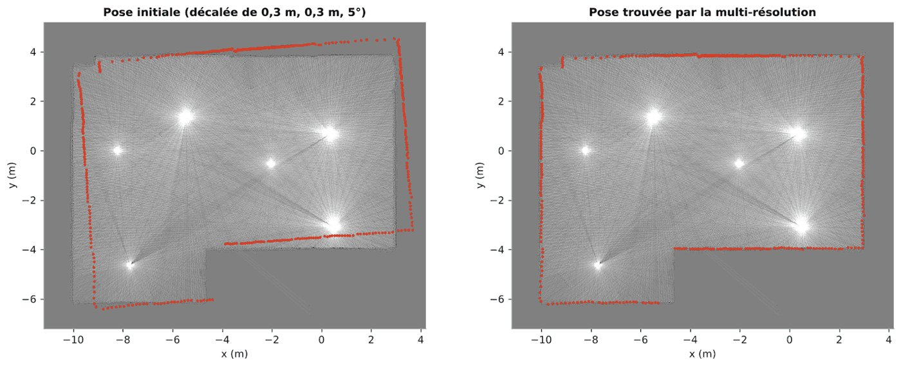
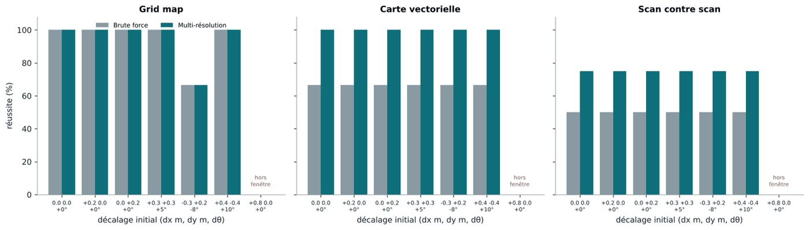
06SLAM
Dernière étape : construire la carte en même temps que l'on s'y localise. Pour obtenir des chiffres fiables, j'ai aussi écrit une salle simulée avec un lidar virtuel, où la vraie position est connue exactement.
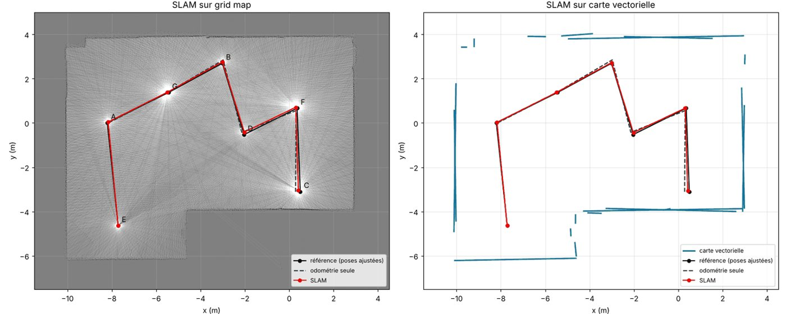
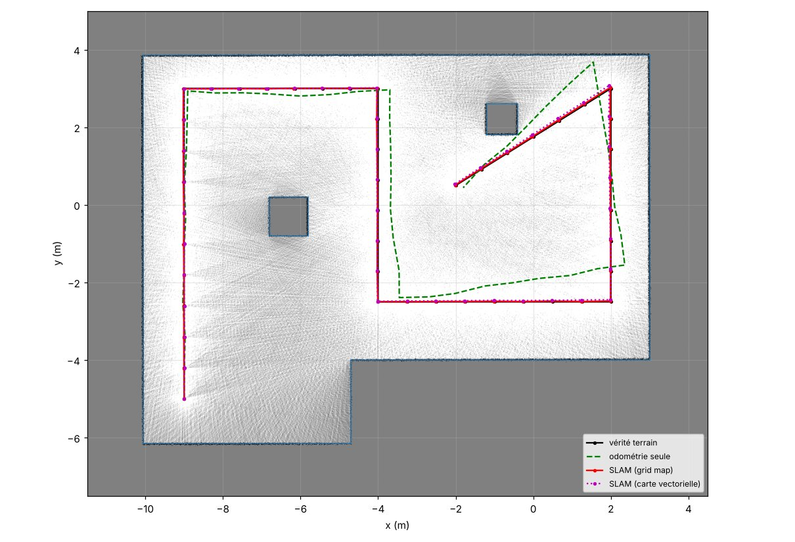
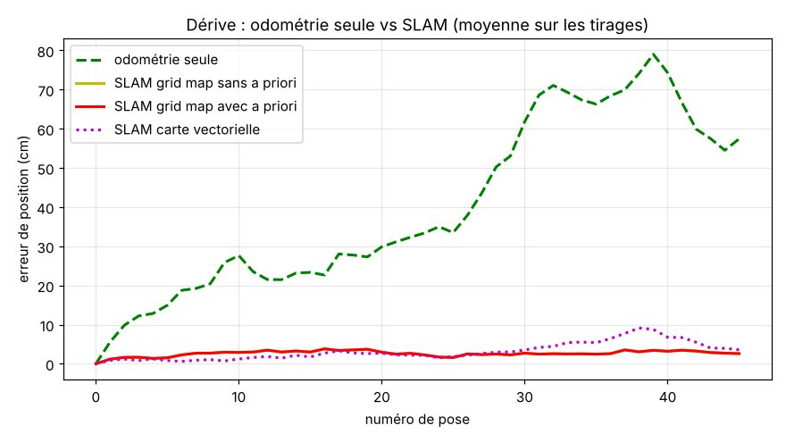
07Résultats
- Localisation : 94 % de réussite sur grid map, 100 % sur carte vectorielle (multi-résolution), 75 % entre scans.
- SLAM en simulation : 2,7 cm d'erreur moyenne, contre 40,7 cm avec l'odométrie seule.
- SLAM sur les scans réels : 5,5 à 9,7 cm, contre 34,8 cm avec l'odométrie seule.
Le code et le compte rendu sont sur GitHub : github.com/louisdelfosse27-hash/ROBOT.